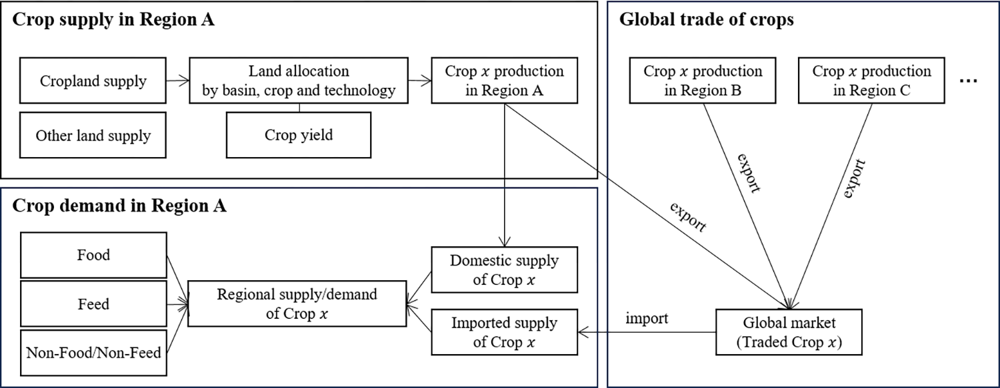

A new study from KAIST explores how climate change and national self-sufficiency policies interact to shape the future of Korea’s agricultural sector. The research shows that global climate change and related trade shifts have a stronger influence on Korean agriculture than domestic climate impacts, and that self-sufficiency policies can benefit producers but may increase consumer costs.

How vulnerable is Korea’s agriculture to climate change? And can growing more wheat and soybeans at home protect the nation from global shocks?
A new paper published in PLOS ONE explores these questions using the Global Change Assessment Model (GCAM). The study provides insights into how climate and self-sufficiency policies jointly shape Korea’s agricultural future, balancing international trade and domestic production in a world of growing uncertainty.
The study uses the Global Change Assessment Model (GCAM) to simulate how climate change and self-sufficiency policies might impact Korea’s production of rice, wheat, and soybeans. Five scenarios explore different combinations of domestic and global climate impacts, along with self-sufficiency policies for wheat and soybeans that require a minimum share of domestic consumption to be met by domestic production.
The key takeaway: global climate change and trade disruptions affect Korea’s agriculture more than local climate shifts. While self-sufficiency policies help support local producers—especially wheat and soy—they also raise food costs for consumers. The policies offer some protection, but not full insulation from global shocks.
“This study finds that in Korea, global climate change and resulting trade shifts have a greater impact on agriculture than domestic climate effects,” said Prof. Jiyong Eom of KAIST School of Business & Technology Management. “While self-sufficiency policies for wheat and soybeans can raise producer revenues, they also increase consumer costs, especially when combined with climate change impacts.”
The study underscores the importance of considering global risks when designing national food security strategies. For countries like Korea, which rely heavily on food imports, self-sufficiency policies offer some resilience—but at a cost. Policymakers will need to carefully weigh the benefits to producers against the burden on consumers, and prepare for a future shaped as much by international conditions as domestic ones.
Read the paper: https://doi.org/10.1371/journal.pone.0313748